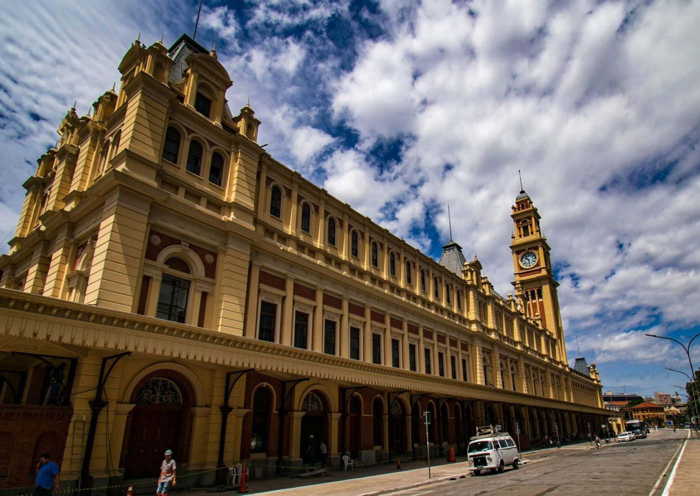

Aos domingos, Museu da Língua Portuguesa tem ingressos pela metade do preço

A partir do dia 3 de setembro e até o final do ano, todos pagarão o valor de R$10,00 para visitar o museu da palavra aos domingos, desde seu acervo fixo até as exposições que acontecem no espaço de tempos em tempos.
Em 2015 o Museu teve de ser fechado por conta de um incêndio que atingiu suas dependências, e só voltou a abrir em agosto de 2018, quase seis anos depois do ocorrido, e desde então segue em operação no centro da cidade.
O museu, que fica próximo à pinacoteca, possui tecnologia de ponta e é um dos primeiros totalmente dedicados ao idioma, além de possuir a Ordem de Camões, concedida pelo governo de Portugal na data da reabertura.
Aos sábados a visitação é completamente gratuita, diferente de outros da cidade, que possuem o benefício às terças feiras. Com seu espaço ampliado desde a reabertura o espaço apresenta ainda suportes interativos para construir e apresentar o seu acervo.
Sua localização na cidade de São Paulo também não é um mero acaso, ele está localizado na capital paulista por ser a cidade que abriga a maior população de falantes da língua portuguesa em todo o mundo.
O museu funciona de Terça a Domingo, das 9h até às 16h30 com permanência até às 18h, e fica localizado na Praça da Luz. Para adquirir os ingressos o visitante pode acessar a plataforma do Sympla, ou comprar diretamente na bilheteria do espaço.